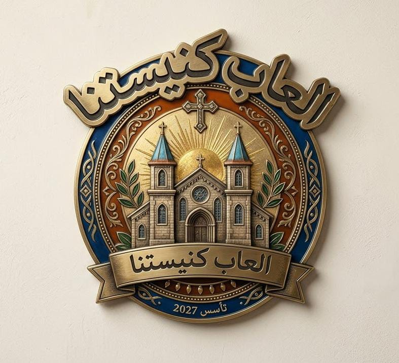

اهلا بيك.. قبل ما تبدأ محتاجين نعرف عليك
بازل وذاكرة وصور قديسين وشهداء
مسابقة عن اصحاح من الكتاب المقدس
تعرف على سيرة قديسينا الأبرار
سير 100 قديس وشهيد
امتحان 10 أسئلة في 10 دقائق
10 أسئلة عن الألحان والطقس الكنسي في مدة 10 دقائق
نتيجتك الحالية
ركّب صورة الرمز المقدس
لعبة تذكر الأزواج المتطابقة
اقرأ السيرة واعرف من هو
30 سؤال (صح وغلط / اكمل / اختيارات) في مدة 10 دقائق
هل انت مستعد للأسئلة؟